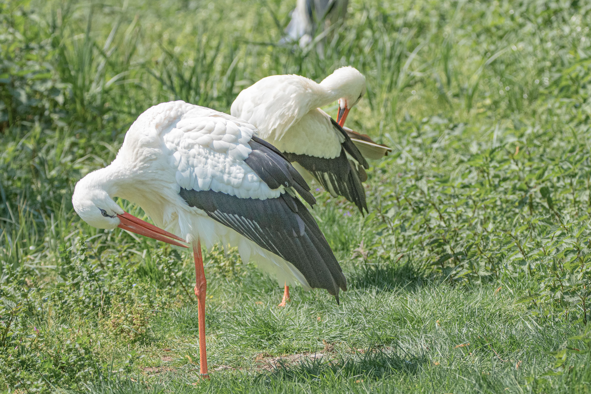

The White Stork is a large, long-legged wading bird with mostly white plumage, black flight feathers, a long red bill and red legs. It is strongly associated with open landscapes and often builds its enormous stick nest on tall structures such as trees, chimneys, rooftops and electricity pylons. White Storks feed opportunistically, walking across grasslands, wetlands and agricultural fields while searching for insects, amphibians, reptiles, small mammals and other prey. Many populations undertake long-distance migrations between Europe and Africa, using rising thermal air currents to travel efficiently. The species is particularly notable for its traditional nesting sites, with some pairs returning to the same areas year after year.